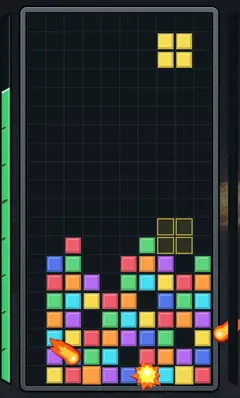

Fire Staff
Fire Staff is an uncommon weapon. An oak staff with a cyclops eye bound to the top. It throws fire.
Stats
| Attack | Power |
|---|---|
| +10 | +1 |
In a duel
A clear made with it puts this on the other player's board:
| Board effect | On the board |
|---|---|
| Blocks knocked out from under your stack |  |
Item sources
| Source | Quantity | Rarity | Notes |
|---|---|---|---|
| Bandit King | 1 | 1/25 | |
| Brann's Trail Arms | 1 | 400 Gold | Shop |
Made by
 Oak Plank
Oak Plank Eye Ball
Eye BallUses
| Makes | Takes | Level | Notes |
|---|---|---|---|
 Burning Staff Burning Staff | 1 | 10 |
Notes
Not written yet
When Fire Staff is worth getting, and what to do with it.
Gallery
Not written yet
No pictures yet: renders, models and animations go here.
Trivia
Not written yet
Anything else worth knowing.
Changes
Not written yet
What changed for Fire Staff, update by update.